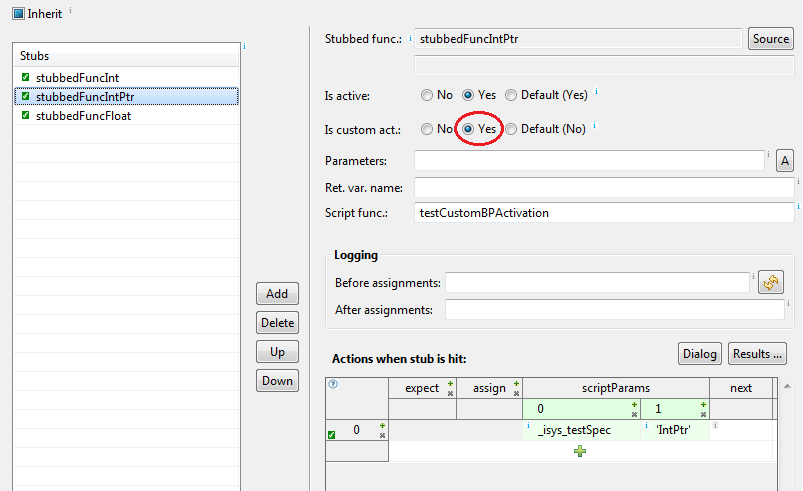

When we define a normal stub, the stubbed function will
not be called, but target will be stopped and then output
parameters and return value will be set according to test
specification.
When script extension function is specified, assignments
given in
testIDEA are executed before the script function is called.
The detailed description of test specification entries is given in
tool-tips.
stubRV in test script:
if self.testCtrl == None:
self.testCtrl = ic.CTestCaseController(self.connectionMgr,
self._isys_testCaseHandle)
self.testCtrl.modify('stubRV', '999')
To make testing even faster, hardware breakpoints should be used. Unfortunately the number of these breakpoints is limited, so if there are more stubs and test points then there are HW breakpoints available, we can not use them. However, if we know the order in which stubs or test points will be hit, we can use custom breakpoint activation with setting Is custom act in sections stubs and test points. If stub or test point has this setting set to Yes, then testIDEA will not set breakpoint for this stub or test point. Instead, we have to write a script function, which removes existing breakpoints and sets next ones depending on target state.
For details about writing scripts please see also section Writing script extensions.
Example
Suppose we have only one HW breakpoint available, and want to test a
function with three stubs and two test-points:
int testCustomStubActivation()
{
int numItems = 7;
numItems += stubbedFuncInt();
numItems *= 2; // tp_tcsa_1
stubbedFuncIntPtr(&numItems);
numItems *= 2; // tp_tcsa_2
numItems += (int)stubbedFuncFloat();
return numItems;
}
Stub for function stubbedFuncInt() should be activated by
testIDEA, then next stubs and test points will be activated by
script function testCustomBPActivation()

Script parameters above are recommended - the first one is test case specification needed to get stub or test point data, the next one indicates to the script which stub or test point has been hit. Instead of this we could write new script function for each stub, or the script function could evaluate target variable to decide which stub/test point to activate next.
def testCustomBPActivation(self, testSpec, stubOrTpId):
print('testCustomBPActivation(), Test case ID: ', testSpec.getTestId(),
' stubId:', stubOrTpId)
testCtrl = self.__getTestCaseCtrl()
testCase = ic.CTestCase(self.connectionMgr)
if stubOrTpId == 'Int':
testCase.setEnableStub(testSpec, 'stubbedFuncInt', False)
testCase.setEnableTestPoint(testSpec, 'tp_tcsa_1', True)
elif stubOrTpId == 'tp_1':
testCase.setEnableTestPoint(testSpec, 'tp_tcsa_1', False)
testCase.setEnableStub(testSpec, 'stubbedFuncIntPtr', True)
elif stubOrTpId == 'IntPtr':
testCase.setEnableStub(testSpec, 'stubbedFuncIntPtr', False)
testCase.setEnableTestPoint(testSpec, 'tp_tcsa_2', True)
elif stubOrTpId == 'tp_2':
testCase.setEnableTestPoint(testSpec, 'tp_tcsa_2', False)
testCase.setEnableStub(testSpec, 'stubbedFuncFloat', True)
elif stubOrTpId == 'Float':
# in this case it is the last stub - it will be deleted by testIDEA
pass
else:
raise Exception('Unknown stub or test-point Id: ' + stubOrTpId)
return None
If we use stubs only (no test points), then instead of the second
script parameter we can get the currently hit stub name by the
following code snippet:
def testCustomBPActivation(self, testSpec):
testCase = ic.CTestCase(self.connectionMgr)
currentAddress = self.debug.getCPUStatus().getExecutionPoint()
addressCtrl = self.debug.getAddressController()
stubName = addressCtrl.getSymbolAtAddress(ic.IConnectDebug.sFunctions,
0,
currentAddress,
ic.IConnectDebug.sScopeWide)
if stubName == 'readADC':
testCase.setEnableStub(testSpec, 'readADC', False)
testCase.setEnableStub(testSpec, 'writeADC', True)
...
Note: One breakpoint is used by testIDEA for run control. For
example, on system with 4 hardware breakpoints, at most 3
stubs and test points may be active at one moment if hardware breakpoints
are used. See Run | Configuration ... dialog for selection
of breakpoint type.
Indices of action lines are zero based and are shown in the leftmost column in the stub steps table.
This way we can access also struct or array members in scripts and work with pointers and references. Script function example:
def stubFunc1(self, param1):
if self.testCtrl == None:
self.testCtrl = ic.CTestCaseController(self.connectionMgr,
self._isys_testCaseHandle)
print('idx =', self.testCtrl.evaluate(param1))
Note: Availability of parameters of stubbed function at
time of stub breakpoint hit depends on compiler. Sometimes
function prolog must be executed for parameters to be stored at
locations as specified in debug information. You can check this in
winIDEA - step into function and see when parameter values are
available in watch window.